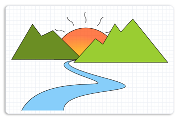
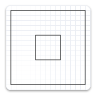

title: Geometries overview description: Describes the basics of Direct2D geometries, objects that you can use to represent, manipulate, and analyze shapes. ms.assetid: f5870d4b-dd30-4034-884e-1c398a6865c6 keywords:
This overview describes how to create and use ID2D1Geometry objects to define and manipulate 2D figures. It contains the following sections.
A Direct2D geometry is an ID2D1Geometry object. This object can be a simple geometry (ID2D1RectangleGeometry, ID2D1RoundedRectangleGeometry, or ID2D1EllipseGeometry), a path geometry (ID2D1PathGeometry), or a composite geometry (ID2D1GeometryGroup and ID2D1TransformedGeometry).
Direct2D geometries enable you to describe two-dimensional figures and offer many uses, such as defining hit-test regions, clip regions, and even animation paths.
Direct2D geometries are immutable and device-independent resources created by ID2D1Factory. Generally, you should create geometries one time and keep them for the life of the application, or until they have to be changed. For more information about device-independent and device-dependent resources, see the Resources Overview.
The following sections describe the different kinds of geometries.
Simple geometries include ID2D1RectangleGeometry, ID2D1RoundedRectangleGeometry, and ID2D1EllipseGeometry objects, and can be used to create basic geometric figures, such as rectangles, rounded rectangles, circles, and ellipses.
To create a simple geometry, use one of the ID2D1Factory::CreateGeometry methods. These methods create an object of the specified type. For example, to create a rectangle, call ID2D1Factory::CreateRectangleGeometry, which returns an ID2D1RectangleGeometry object; to create a rounded rectangle, call ID2D1Factory::CreateRoundedRectangleGeometry, which returns an ID2D1RoundedRectangleGeometry object, and so on.
The following code example calls the CreateEllipseGeometry method, passing in an ellipse structure with the center set to (100, 100), x-radius to 100, and y-radius to 50. Then, it calls DrawGeometry, passing in the returned ellipse geometry, a pointer to a black ID2D1SolidColorBrush, and a stroke width of 5. The following illustration shows the output from the code example.
ID2D1EllipseGeometry *m_pEllipseGeometry;
if (SUCCEEDED(hr))
{
hr = m_pD2DFactory->CreateEllipseGeometry(
D2D1::Ellipse(D2D1::Point2F(100.f, 60.f), 100.f, 50.f),
&m_pEllipseGeometry
);
}
m_pRenderTarget->DrawGeometry(m_pEllipseGeometry, m_pBlackBrush, 5);
To draw the outline of any geometry, use the DrawGeometry method. To paint its interior, use the FillGeometry method.
Path geometries are represented by the ID2D1PathGeometry interface. These objects can be used to describe complex geometric figures composed of segments such as arcs, curves, and lines. The following illustration shows a drawing created by using path geometry.

For more information and examples, see the Path Geometries Overview.
A composite geometry is a geometry grouped or combined with another geometry object, or with a transform. Composite geometries include ID2D1TransformedGeometry and ID2D1GeometryGroup objects.
Geometry groups are a convenient way to group several geometries at the same time so all figures of several distinct geometries are concatenated into one. To create a ID2D1GeometryGroup object, call the CreateGeometryGroup method on the ID2D1Factory object, passing in the fillMode with possible values of D2D1_FILL_MODE_ALTERNATE (alternate) and D2D1_FILL_MODE_WINDING, an array of geometry objects to add to the geometry group, and the number of elements in this array.
The following code example first declares an array of geometry objects. These objects are four concentric circles that have the following radii: 25, 50, 75, and 100. Then call the CreateGeometryGroup on the ID2D1Factory object, passing in D2D1_FILL_MODE_ALTERNATE, an array of geometry objects to add to the geometry group, and the number of elements in this array.
ID2D1Geometry *ppGeometries[] =
{
m_pEllipseGeometry1,
m_pEllipseGeometry2,
m_pEllipseGeometry3,
m_pEllipseGeometry4
};
hr = m_pD2DFactory->CreateGeometryGroup(
D2D1_FILL_MODE_ALTERNATE,
ppGeometries,
ARRAYSIZE(ppGeometries),
&m_pGeoGroup_AlternateFill
);
if (SUCCEEDED(hr))
{
hr = m_pD2DFactory->CreateGeometryGroup(
D2D1_FILL_MODE_WINDING,
ppGeometries,
ARRAYSIZE(ppGeometries),
&m_pGeoGroup_WindingFill
);
}
The following illustration shows the results of rendering the two group geometries from the example.

There are multiple ways to transform a geometry. You can use the SetTransform method of a render target to transform everything that the render target draws, or you can associate a transform directly with a geometry by using the CreateTransformedGeometry method to create an ID2D1TransformedGeometry.
The method that you should use depends on the effect that you want. When you use the render target to transform and then render a geometry, the transform affects everything about the geometry, including the width of any stroke that you have applied. On the other hand, when you use an ID2D1TransformedGeometry, the transform affects only the coordinates that describe the shape. The transformation will not affect the stroke thickness when the geometry is drawn.
[!Note]
Starting with Windows 8 the world transform will not affect the stroke thickness of strokes with D2D1_STROKE_TRANSFORM_TYPE_FIXEDor D2D1_STROKE_TRANSFORM_TYPE_HAIRLINE. You should use these transform types to achieve transform independent strokes
Â
The following example creates an ID2D1RectangleGeometry, then draws it without transforming it. It produces the output shown in the following illustration.

hr = m_pD2DFactory->CreateRectangleGeometry(
D2D1::RectF(150.f, 150.f, 200.f, 200.f),
&m_pRectangleGeometry
);
// Draw the untransformed rectangle geometry.
m_pRenderTarget->DrawGeometry(m_pRectangleGeometry, m_pBlackBrush, 1);
The next example uses the render target to scale the geometry by a factor of 3, then draws it. The following illustration shows the result of drawing the rectangle without the transform and with the transform. Notice that the stroke is thicker after the transform, even though the stroke thickness is 1.

// Transform the render target, then draw the rectangle geometry again.
m_pRenderTarget->SetTransform(
D2D1::Matrix3x2F::Scale(
D2D1::SizeF(3.f, 3.f),
D2D1::Point2F(175.f, 175.f))
);
m_pRenderTarget->DrawGeometry(m_pRectangleGeometry, m_pBlackBrush, 1);
The next example uses the CreateTransformedGeometry method to scale the geometry by a factor of 3, then draws it. It produces the output shown in the following illustration. Notice that, although the rectangle is larger, its stroke hasn't increased.

// Create a geometry that is a scaled version
// of m_pRectangleGeometry.
// The new geometry is scaled by a factory of 3
// from the center of the geometry, (35, 35).
hr = m_pD2DFactory->CreateTransformedGeometry(
m_pRectangleGeometry,
D2D1::Matrix3x2F::Scale(
D2D1::SizeF(3.f, 3.f),
D2D1::Point2F(175.f, 175.f)),
&m_pTransformedGeometry
);
// Replace the previous render target transform.
m_pRenderTarget->SetTransform(D2D1::Matrix3x2F::Identity());
// Draw the transformed geometry.
m_pRenderTarget->DrawGeometry(m_pTransformedGeometry, m_pBlackBrush, 1);
You can use an ID2D1Geometry object as a geometric mask when you call the PushLayer method. The geometric mask specifies the area of the layer that is composited into the render target. For more information, see the Geometric Masks section of the Layers Overview.
The ID2D1Geometry interface provides several geometric operations that you can use to manipulate and measure geometric figures. For example, you can use them to calculate and return their bounds, compare to see how one geometry is spatially related to another (useful for hit testing), calculate the areas and lengths, and more. The following table describes the common geometric operations.
| Operation | Method |
|---|---|
| Combine | CombineWithGeometry |
| Bounds/ Widened Bounds/Retrieve Bounds, Dirty Region update | Widen, GetBounds, GetWidenedBounds |
| Hit Testing | FillContainsPoint, StrokeContainsPoint |
| Stroke | StrokeContainsPoint |
| Comparison | CompareWithGeometry |
| Simplification (removes arcs and quadratic Bezier curves) | Simplify |
| Tessellation | Tessellate |
| Outline (remove intersection) | Outline |
| Calculate the area or length of a geometry | ComputeArea, ComputeLength, ComputePointAtLength |
Â
[!Note]
Starting in Windows 8, you can use the ComputePointAndSegmentAtLength method on the ID2D1PathGeometry1 to calculate the area or length of a geometry.
Â
To combine one geometry with another, call the ID2D1Geometry::CombineWithGeometry method. When you combine the geometries, you specify one of the four ways to perform the combine operation: D2D1_COMBINE_MODE_UNION (union), D2D1_COMBINE_MODE_INTERSECT (intersect), D2D1_COMBINE_MODE_XOR (xor), and D2D1_COMBINE_MODE_EXCLUDE (exclude). The following code example shows two circles that are combined by using the union combine mode, where the first circle has the center point of (75, 75) and the radius of 50, and the second circle has the center point of (125, 75) and the radius of 50.
HRESULT hr = S_OK;
ID2D1GeometrySink *pGeometrySink = NULL;
// Create the first ellipse geometry to merge.
const D2D1_ELLIPSE circle1 = D2D1::Ellipse(
D2D1::Point2F(75.0f, 75.0f),
50.0f,
50.0f
);
hr = m_pD2DFactory->CreateEllipseGeometry(
circle1,
&m_pCircleGeometry1
);
if (SUCCEEDED(hr))
{
// Create the second ellipse geometry to merge.
const D2D1_ELLIPSE circle2 = D2D1::Ellipse(
D2D1::Point2F(125.0f, 75.0f),
50.0f,
50.0f
);
hr = m_pD2DFactory->CreateEllipseGeometry(circle2, &m_pCircleGeometry2);
}
if (SUCCEEDED(hr))
{
//
// Use D2D1_COMBINE_MODE_UNION to combine the geometries.
//
hr = m_pD2DFactory->CreatePathGeometry(&m_pPathGeometryUnion);
if (SUCCEEDED(hr))
{
hr = m_pPathGeometryUnion->Open(&pGeometrySink);
if (SUCCEEDED(hr))
{
hr = m_pCircleGeometry1->CombineWithGeometry(
m_pCircleGeometry2,
D2D1_COMBINE_MODE_UNION,
NULL,
NULL,
pGeometrySink
);
}
if (SUCCEEDED(hr))
{
hr = pGeometrySink->Close();
}
SafeRelease(&pGeometrySink);
}
}
The following illustration shows two circles combined with a combine mode of union.

For illustrations of all the combine modes, see the D2D1_COMBINE_MODE enumeration.
The Widen method generates a new geometry whose fill is equivalent to stroking the existing geometry, and then writes the result to the specified ID2D1SimplifiedGeometrySink object. The following code example calls Open on the ID2D1PathGeometry object. If Open succeeds, it calls Widen on the geometry object.
ID2D1GeometrySink *pGeometrySink = NULL;
hr = pPathGeometry->Open(&pGeometrySink);
if (SUCCEEDED(hr))
{
hr = pGeometry->Widen(
strokeWidth,
pIStrokeStyle,
pWorldTransform,
pGeometrySink
);
The Tessellate method creates a set of clockwise-wound triangles that cover the geometry after it is transformed by using the specified matrix and flattened by using the specified tolerance. The following code example uses Tessellate to create a list of triangles that represent pPathGeometry. The triangles are stored in an ID2D1Mesh, pMesh, then transferred to a class member, m_pStrokeMesh, for later use when rendering.
ID2D1Mesh *pMesh = NULL;
hr = m_pRT->CreateMesh(&pMesh);
if (SUCCEEDED(hr))
{
ID2D1TessellationSink *pSink = NULL;
hr = pMesh->Open(&pSink);
if (SUCCEEDED(hr))
{
hr = pPathGeometry->Tessellate(
NULL, // world transform (already handled in Widen)
pSink
);
if (SUCCEEDED(hr))
{
hr = pSink->Close();
if (SUCCEEDED(hr))
{
SafeReplace(&m_pStrokeMesh, pMesh);
}
}
pSink->Release();
}
pMesh->Release();
}
The FillContainsPoint method indicates whether the area filled by the geometry contains the specified point. You can use this method to do hit testing. The following code example calls FillContainsPoint on an ID2D1EllipseGeometry object, passing in a point at (0,0) and an Identity matrix.
BOOL containsPoint1;
hr = m_pCircleGeometry1->FillContainsPoint(
D2D1::Point2F(0,0),
D2D1::Matrix3x2F::Identity(),
&containsPoint1
);
if (SUCCEEDED(hr))
{
// Process containsPoint.
}
The StrokeContainsPoint method determines whether the geometry's stroke contains the specified point. You can use this method to do hit testing. The following code example uses StrokeContainsPoint.
BOOL containsPoint;
hr = m_pCircleGeometry1->StrokeContainsPoint(
D2D1::Point2F(0,0),
10, // stroke width
NULL, // stroke style
NULL, // world transform
&containsPoint
);
if (SUCCEEDED(hr))
{
// Process containsPoint.
}
The Simplify method removes arcs and quadratic Bezier curves from a specified geometry. So, the resulting geometry contains only lines and, optionally, cubic Bezier curves. The following code example uses Simplify to transform a geometry with Bezier curves into a geometry that contains only line segments.
HRESULT D2DFlatten(
ID2D1Geometry *pGeometry,
float flatteningTolerance,
ID2D1Geometry **ppGeometry
)
{
HRESULT hr;
ID2D1Factory *pFactory = NULL;
pGeometry->GetFactory(&pFactory);
ID2D1PathGeometry *pPathGeometry = NULL;
hr = pFactory->CreatePathGeometry(&pPathGeometry);
if (SUCCEEDED(hr))
{
ID2D1GeometrySink *pSink = NULL;
hr = pPathGeometry->Open(&pSink);
if (SUCCEEDED(hr))
{
hr = pGeometry->Simplify(
D2D1_GEOMETRY_SIMPLIFICATION_OPTION_LINES,
NULL, // world transform
flatteningTolerance,
pSink
);
if (SUCCEEDED(hr))
{
hr = pSink->Close();
if (SUCCEEDED(hr))
{
*ppGeometry = pPathGeometry;
(*ppGeometry)->AddRef();
}
}
pSink->Release();
}
pPathGeometry->Release();
}
pFactory->Release();
return hr;
}
The ComputeLength method calculates the length of the specified geometry if each segment were unrolled into a line. This includes the implicit closing segment if the geometry is closed. The following code example uses ComputeLength to compute the length of a specified circle (m_pCircleGeometry1).
float length;
// Compute the area of circle1
hr = m_pCircleGeometry1->ComputeLength(
D2D1::IdentityMatrix(),
&length
);
if (SUCCEEDED(hr))
{
// Process the length of the geometry.
}
The ComputeArea method calculates the area of the specified geometry. The following code example uses ComputeArea to compute the area of a specified circle (m_pCircleGeometry1).
float area;
// Compute the area of circle1
hr = m_pCircleGeometry1->ComputeArea(
D2D1::IdentityMatrix(),
&area
);
The CompareWithGeometry method describes the intersection between the geometry that calls this method and the specified geometry. The possible values for intersection include D2D1_GEOMETRY_RELATION_DISJOINT (disjoint), D2D1_GEOMETRY_RELATION_IS_CONTAINED (is contained), D2D1_GEOMETRY_RELATION_CONTAINS (contains), and D2D1_GEOMETRY_RELATION_OVERLAP (overlap). "disjoint" means that two geometry fills do not intersect at all. "is contained" means that the geometry is completely contained by the specified geometry. "contains" means that the geometry completely contains the specified geometry, and "overlap" means the two geometries overlap but neither completely contains the other.
The following code example shows how to compare two circles that have the same radius of 50 but are offset by 50.
HRESULT hr = S_OK;
ID2D1GeometrySink *pGeometrySink = NULL;
// Create the first ellipse geometry to merge.
const D2D1_ELLIPSE circle1 = D2D1::Ellipse(
D2D1::Point2F(75.0f, 75.0f),
50.0f,
50.0f
);
hr = m_pD2DFactory->CreateEllipseGeometry(
circle1,
&m_pCircleGeometry1
);
if (SUCCEEDED(hr))
{
// Create the second ellipse geometry to merge.
const D2D1_ELLIPSE circle2 = D2D1::Ellipse(
D2D1::Point2F(125.0f, 75.0f),
50.0f,
50.0f
);
hr = m_pD2DFactory->CreateEllipseGeometry(circle2, &m_pCircleGeometry2);
}
D2D1_GEOMETRY_RELATION result = D2D1_GEOMETRY_RELATION_UNKNOWN;
// Compare circle1 with circle2
hr = m_pCircleGeometry1->CompareWithGeometry(
m_pCircleGeometry2,
D2D1::IdentityMatrix(),
0.1f,
&result
);
if (SUCCEEDED(hr))
{
static const WCHAR szGeometryRelation[] = L"Two circles overlap.";
m_pRenderTarget->SetTransform(D2D1::IdentityMatrix());
if (result == D2D1_GEOMETRY_RELATION_OVERLAP)
{
m_pRenderTarget->DrawText(
szGeometryRelation,
ARRAYSIZE(szGeometryRelation) - 1,
m_pTextFormat,
D2D1::RectF(25.0f, 160.0f, 200.0f, 300.0f),
m_pTextBrush
);
}
}
The Outline method computes the outline of the geometry (a version of the geometry in which no figure crosses itself or any other figure) and writes the result to an ID2D1SimplifiedGeometrySink. The following code example uses Outline to construct an equivalent geometry without any self-intersections. It uses the default flattening tolerance.
HRESULT D2DOutline(
ID2D1Geometry *pGeometry,
ID2D1Geometry **ppGeometry
)
{
HRESULT hr;
ID2D1Factory *pFactory = NULL;
pGeometry->GetFactory(&pFactory);
ID2D1PathGeometry *pPathGeometry = NULL;
hr = pFactory->CreatePathGeometry(&pPathGeometry);
if (SUCCEEDED(hr))
{
ID2D1GeometrySink *pSink = NULL;
hr = pPathGeometry->Open(&pSink);
if (SUCCEEDED(hr))
{
hr = pGeometry->Outline(NULL, pSink);
if (SUCCEEDED(hr))
{
hr = pSink->Close();
if (SUCCEEDED(hr))
{
*ppGeometry = pPathGeometry;
(*ppGeometry)->AddRef();
}
}
pSink->Release();
}
pPathGeometry->Release();
}
pFactory->Release();
return hr;
}
The GetBounds method retrieves the bounds of the geometry. The following code example uses GetBounds to retrieve the bounds of a specified circle (m_pCircleGeometry1).
D2D1_RECT_F bounds;
hr = m_pCircleGeometry1->GetBounds(
D2D1::IdentityMatrix(),
&bounds
);
if (SUCCEEDED(hr))
{
// Retrieve the bounds.
}
The GetWidenedBounds method retrieves the bounds of the geometry after it is widened by the specified stroke width and style and transformed by the specified matrix. The following code example uses GetWidenedBounds to retrieve the bounds of a specified circle (m_pCircleGeometry1) after it is widened by the specified stroke width.
float dashes[] = {1.f, 1.f, 2.f, 3.f, 5.f};
m_pD2DFactory->CreateStrokeStyle(
D2D1::StrokeStyleProperties(
D2D1_CAP_STYLE_FLAT,
D2D1_CAP_STYLE_FLAT,
D2D1_CAP_STYLE_ROUND,
D2D1_LINE_JOIN_ROUND, // lineJoin
10.f, //miterLimit
D2D1_DASH_STYLE_CUSTOM,
0.f //dashOffset
),
dashes,
ARRAYSIZE(dashes)-1,
&m_pStrokeStyle
);
D2D1_RECT_F bounds1;
hr = m_pCircleGeometry1->GetWidenedBounds(
5.0,
m_pStrokeStyle,
D2D1::IdentityMatrix(),
&bounds1
);
if (SUCCEEDED(hr))
{
// Retrieve the widened bounds.
}
The ComputePointAtLength method calculates the point and tangent vector at the specified distance along the geometry. The following code example uses ComputePointAtLength.
D2D1_POINT_2F point;
D2D1_POINT_2F tangent;
hr = m_pCircleGeometry1->ComputePointAtLength(
10,
NULL,
&point,
&tangent);
Â
Â